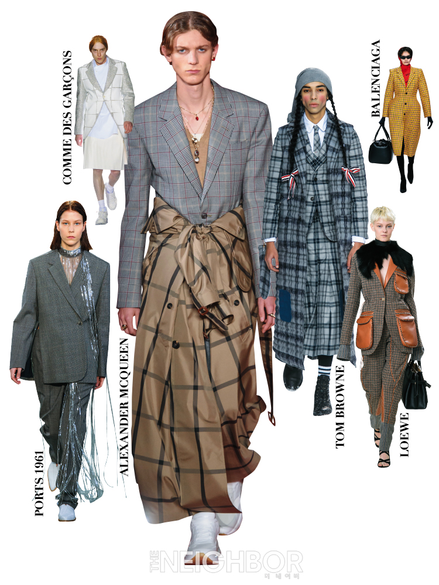

남자는 바지, 여자는 치마를 입어야 한다는 생각을 하시는 분은 요즘엔 특히나 찾아보기 어려울 것이라고 생각합니다. 유니섹스 스타일에는 많은 역사와 변천사가 있었고 지금은 남자가 치마형태의 옷을 입거나 여자가 남성복 스타일의 옷을 입어도 개성이라고 생각할 수 있게 되었지요. 그러나 특히 요즘에는 남성과 여성 패션의 경계가 매우 모호해졌다는 생각이 듭니다. 아직은 남성이 치마를 입거나 크롭티를 입는 것이 어색하다고 느껴질 법한데, 당당하게 패션화보로 찾아오는 경우도 있습니다. 여성의 경우에도 남성 정장 스타일의 옷이나 빅사이즈 스타일을 즐기는 사람이 많아지고 있습니다. 편안한 착용감과 개성이 넘치는 유니섹스 스타일은 최근 남녀 모두에게 사랑받고 있는데요, 남녀 모두 입기 좋은 유니섹스를 아이덴티티로 하고 있는 브랜드를 알아볼까요?
